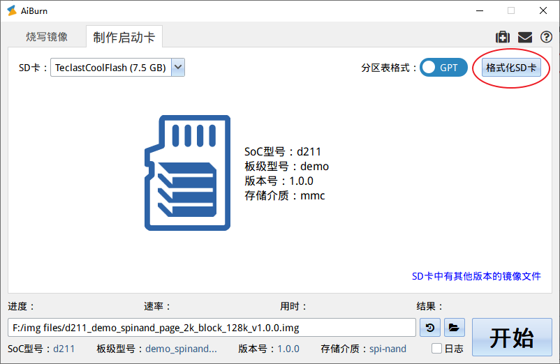
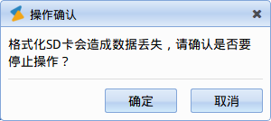

格式化 SD 卡
15 Jan 2024
有些情况下，用户需要将整个 SDCard 进行一次格式化，这样可以达到两个目的：
-
更改 SDCard 的分区格式在 GPT（默认模式）、MBR 格式之间进行切换（在
选项中选择MBR 格式） -
如果 SDCard 中原来有多个分区，可以将其整合为一个独立分区
匠芯创的启动卡采样的 GPT 格式，如果出现“制作启动卡”失败，可以先尝试使用此格式化功能确保卡是 GPT 分区格式。

点击右上角的 格式化 SD 卡 后会弹出提示窗口：

点击 Yes，会执行格式化，在完成后主界面会提示“执行成功”。
提示：
当出现“格式化 SD 卡”失败，可以尝试打开“MBR 格式”（默认关闭）进行格式化。